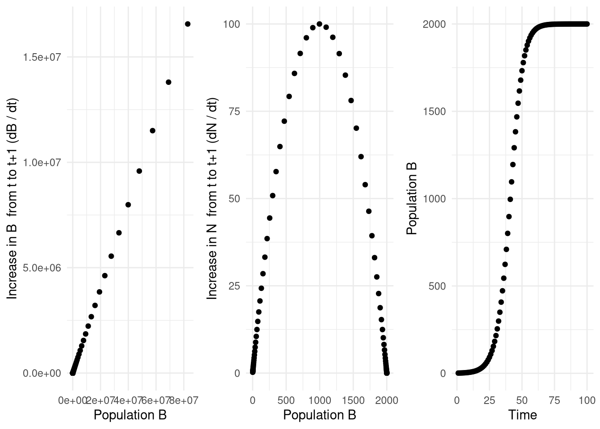
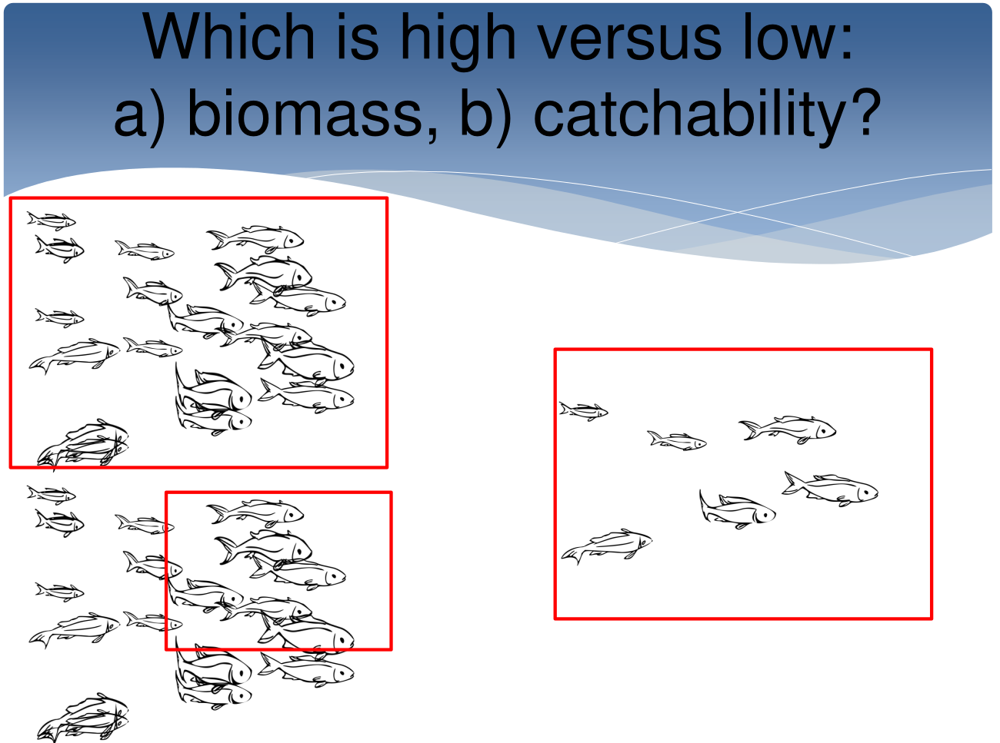
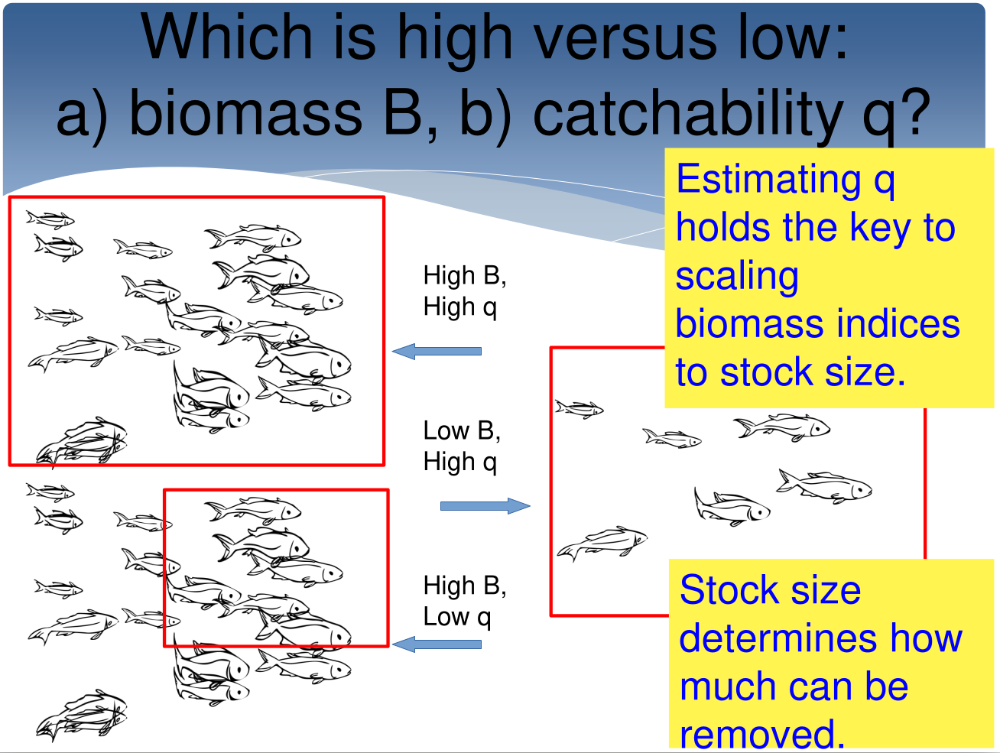
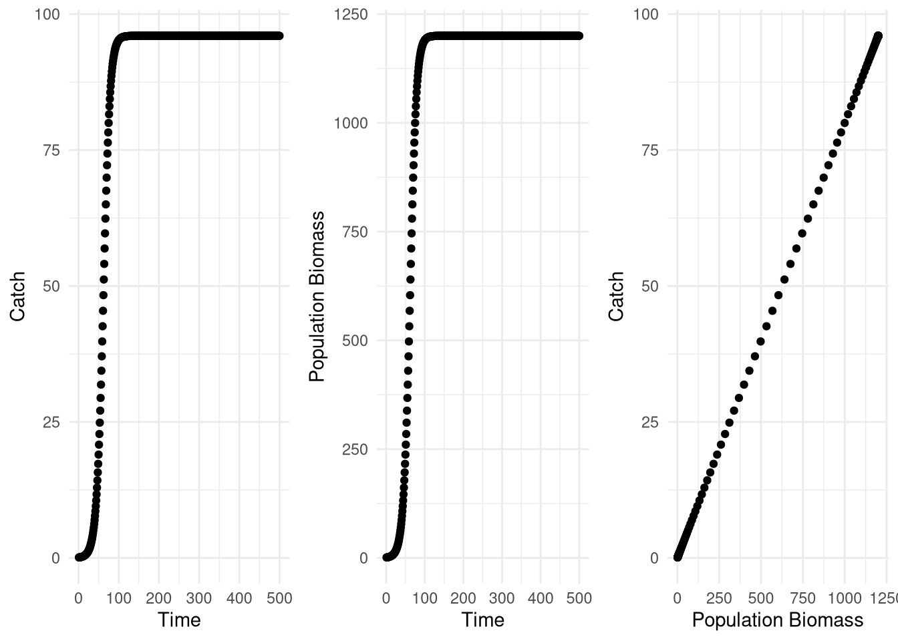
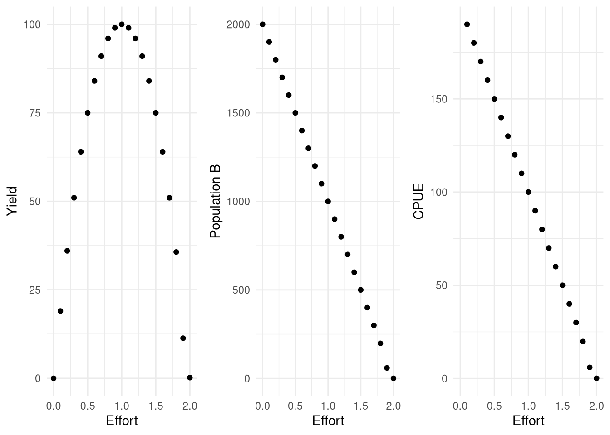
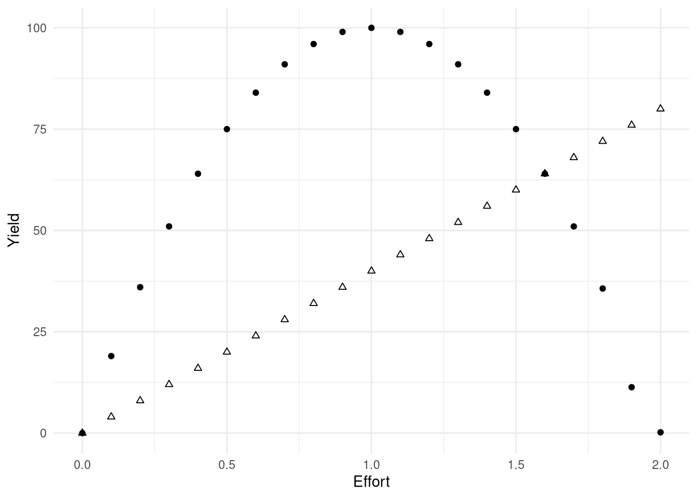
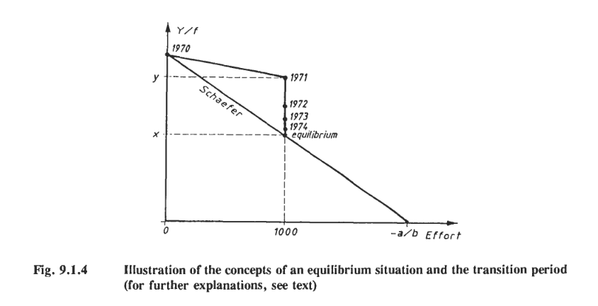

### How does amount produced by a population relate to population size?
# This is done by:
#1) Changing model to have max time = 100, K = 2000, and r = 0.2.
#2) Saving Population size as a vector, then Amount Produced by that population size as a vector, and plot them.
#3) Remember that "Amount Produced" by a given population size contributes to the next years population size.
#It is not created by next years population size. The "Amount Produced" beyond replacement is also called "Yield."
#Exponential
PP<-vector(mode = "numeric", length = 100); PP0<-1; rr<- 0.2
DD<-vector(mode = "numeric", length = 100);
TT<-1:100 # not actually used within the loop but corresponds with i
DD0<-rr*PP0 # initial population growth - can be small so doesn't really affect model
PP[1]<-PP0+DD0 # initial population size + growth in first year of model
for(i in 2:100){
DD[i-1]<-rr*PP[i-1];
PP[i]<-PP[i-1] + DD[i-1]
} #DD is the production added to the previous years population size
DD[100]<-rr*PP[100] # this is just to finish series
par(mfrow = c(1,3))
p1 <- tibble(PP,DD) %>% ggplot(aes(PP,DD)) + geom_point() + xlab("Population B") + ylab("Increase in B from t to t+1 (dB / dt)")
#Now do the same for the logistic equation
#Logistic
PP<-vector(mode = "numeric", length = 100); PP0<-1; rr<- 0.2
DD<-vector(mode = "numeric", length = 100);
# DD is a new storage compoenent. It will store the growth component of the logistic equation.
TT<-1:100# not actually used within the loop but corresponds with i
KK<-2000 # This is a new parameter - carrying capacity.Surplus production models
Surplus production is an economic term given to the excess yield (i.e., excess after replacement) resulting from a general production process.
In fisheries research, yield takes on a specific meaning, which is the surplus resulting from a population under a constant replacement scenario. This constant-replacement-scenario ensures that we are talking about a long-term concept, as catch fluctuates with error/uncertainty/diversity in the short-term. Therefore, usually when we are talking about yield we are talking about a theoretical long-term property of the population, given a constant fishing pressure over time. When we are talking about catch it is usually related to the result of fishing activities in a given year.
The amount of yield that a fish population produces changes with it’s population size. This change is the result of density dependence as we saw in logistic growth. That is, when population sizes are close to carrying capacity, they cannot grow as fast. It is also a result of exponential growth: if populations are very small, they amount of fish reproduced the following year is smaller simply because the parental population is smaller. These properties you will demonstrate just using the logistic growth equation:
Exercise
Try filling in the bits of code missing by replacing the text beginning with ‘#<’ and ending with ‘>’.
#FILL IN CODE BELOW. HINT: LOOK AT HOW DD0 IS DEFINED IN THE FIRST STEP IN COMPARISON
#WITH HOW DD IS DEFINED INSIDE THE LOOP. THE FORMULA STRUCTURE STAYS THE
#SAME BUT THE T SUBSCRIPTS MUST MATCH.
DD0<- rr*PP0*(1-PP0/KK) # This keeps the equation structure the same. It is the initial DD component for the first year.
PP[1]<-PP0+DD0
for(i in 2:100){
DD[i-1]<- #<FILL IN CODE HERE >
PP[i]<-PP[i-1] + DD[i-1]
}
DD[100]<- #<FINISH OFF THE LAST STEP HERE>Are you ready for the answer? See below.
#FILL IN CODE BELOW. HINT: LOOK AT HOW DD0 IS DEFINED IN THE FIRST STEP IN COMPARISON
#WITH HOW DD IS DEFINED INSIDE THE LOOP. THE FORMULA STRUCTURE STAYS THE
#SAME BUT THE T SUBSCRIPTS MUST MATCH.
DD0<- rr*PP0*(1-PP0/KK) # This keeps the equation structure the same. It is the initial DD component for the first year.
PP[1]<-PP0+DD0
for(i in 2:100){
DD[i-1]<-rr*PP[i-1]*(1-PP[i-1]/KK);
PP[i]<-PP[i-1] + DD[i-1]
}
DD[100]<- rr*PP[100]*(1-PP[100]/KK)#FINISH OFF THE LAST STEP HERE
p2 <- tibble(PP,DD) %>% ggplot(aes(PP,DD)) + geom_point() + xlab("Population B") + ylab("Increase in N from t to t+1 (dN / dt)")
#Now graph the population over time alongside the above:
p3 <- tibble(PP,TT) %>% ggplot(aes(TT,PP)) + geom_point() + xlab("Time") + ylab("Population B")
gridExtra::grid.arrange(p1,p2,p3, ncol = 3)
Yield is maximized at a certain value for population size, usually towards a middle value when assuming a logistic growth process. Population size can change for a variety of reasons, but one major reason in fisheries is the fishing pressure itself. Therefore, if we want higher yield, we want to fish an unfished population down to a size that maximizes (roughly) its yield production.
To understand how much we should fish in order to achieve the ‘right’ population size, we need three pieces of information:
the relationship between fishing activity and population size (effort x biomass).
the relationship between population size and growth rate (growth rate x biomass).
how growth rate translates into concrete fish removals in terms of tonnes or kg (growth rate and effort x catch).
These pieces of information are controlled by parameters. Choosing the parameters is done through fitting the model to data in order to have a well-supported parameterization.
Schaeffer model
Production models are useful in that they put these three pieces of information together into the same model, that can often be parameterized using data. The Schaeffer model is the simplest form of production models and uses the assumption that catch per unit effort is linearly related to population biomass.
Remember the logistic growth equation:
\(N_t=N_{t−1}+r∗N_{t−1}∗(1−N_{t−1}/K)\)
Above is enough to understand how growth rate and biomass relate to each other, but understading relationships with catch and effort require us to change this into an economic model including human activities. The first step is adding catch removals on the kg or tonnes scale, as this is the same scale on which population changes occur. To do this, we change from numbers to biomass (by multiplying by an average weight), and insert catch removals (\(C_{t-1}\)). As removals, catch will decrease the availability of biomass to fish in the next time step.
\(B_t=B_{t−1}+r∗B_{t−1}∗(1−B_{t−1}/K)- \bf{C_{t-1}}\)
Catch removals can be further related to two properties: the amount of human activity (effort, \(E\)) and the effectiveness of that activity (catchability, \(q\)). Here, they can be included by further defining \(C_{t-1}\):
\(C_t=qEB_t\)
Here we see that within a each time step (\(t\) or \(t-1\)), catch is assumed to be linearly related to effort, linearly later to catchability, and linearly related to biomass of the stock. It indicates that as effort increases, catch will increase, also causing a reduction in total biomass ($B_t$) in the next time step. It also indicates that if any of these three components of the fishing activity increase (amount of activity, effectiveness of activity, or biomass available to remove), then so will the catch. We may be able to observe effort levels, but as \(q\) and \(B\) cannot be observed directly, they are confounded:

In addition, this assumption provides for a convenient relationship that is exploited when trying to fit such a model to data. Under this assumption defining catch, we can switch the equation around and also write:
\(C_t/E = qN_t\)
In this form, it becomes clear that if we have data as a set of observations of catch per unit effort ($C_t/E$) and catch ($C_t$) over time, and there is enough contrast in the data, then we may be able to detect catchability and biomass.
We need contrast in the data to be able to detect informative parameter values (i.e., how growth changes at different population sizes and how easy the fish are to catch). Because we inherently don’t know and can’t observe the total population size of fish, we don’t know how catchable they are. If we assume high catchability, then we have to assume low population size, and vice versa. Getting the wrong answer could mean assuming that a large mass of removals can be taken from a small population, causing overfishing. Therefore, understanding where the best fishing level is not always easy or possible if there are not enough contrast in the data.

What is contrast in the data? Having contrast in the data means that the population has been observed at various states, so that it’s responses to various conditions have been observed. If we have a CPUE and catch data series, to fit a surplus production model, there must be information in just those two data sources concerning:
growth ($r$)
carrying capacity ($K$)
catchability ($q$)
initial population size ($N_{t=0}$)
As you go through the following exercise, think about the different ‘experiments’ needed to get information about these parameters. What states of population size (high/low) and fishing (heavy/light) should be observed to get this information at a minimum?
After getting confident estimates of the above parameters, the system can then be analyzed (or simulated) to determine:
At what population biomass level is population growth the greatest? (Remember to distinguish between growth rate, which is in units per time step, and growth amount, catch, which is a single unit of removal in kg or tonnes in a time step)
At what effort level do you also get the highest yield?
Further considerations include:
What is maximum sustainable yield (MSY)? How is this value related to r and K?
If cost is linearly related to effort, what is maximum economic yield (MEY)?
Fitting a surplus production model is similar to fitting a logistic growth model, as both are non-linear. Unlike in the previous exercise, biomass is unknown in this example, as is normal in fisheries, so CPUE is used as an index (as supported in the above theory). Keep in mind: where is the error (i.e., the statistical model)? What are the parameters? What objective function are we using?
Exercise
###------------------------------Exercise 5: Production functions-----------------------###
#Now add population removals - catch, which is a linear function of fishing effort,
#catchability, and population size
#Here you will run a population for a long time at a certain effort level.
#Notice that the value at which the population stabilizes is no longer carrying
#capacity, because catch has been removed. Also note how catch is related to
#population size.
PP<-vector(mode = "numeric", length = 500); PP0<-1; rr<- 0.2
DD<-vector(mode = "numeric", length = 500);
CC<-vector(mode = "numeric", length = 500);
Effort<-0.8; Catchability<-0.1
TT<-1:500
KK<-2000Try filling in the bits of code missing by replacing the text beginning with ‘#<’ and ending with ‘>’.
#FILL IN CODE BELOW. HINT: LOOK AT HOW DD0 IS DEFINED ABOVE IN COMPARISON
#WITH HOW DD IS DEFINED INSIDE THE LOOP. THE FORMULA STRUCTURE STAYS THE
#SAME BUT THE T SUBSCRIPTS MUST MATCH.
DD0<-rr*PP0*(1-PP0/KK)
CC0<-PP0*Effort*Catchability;
PP[1]<-PP0 + DD0 - CC0
for(i in 2:500){
DD[i-1]<- #<FILL IN CODE HERE >
CC[i-1]<- PP[i-1]*Effort*Catchability
PP[i]<- PP[i-1] + DD[i-1] - CC[i-1]
}
DD[500]<- #<FINISH OFF THE LAST STEP HERE >
CC[500]<- PP[500]*Effort*CatchabilityAre you ready for the answer? See below.
DD0<-rr*PP0*(1-PP0/KK)
CC0<-PP0*Effort*Catchability;
PP[1]<-PP0 + DD0 - CC0
for(i in 2:500){
DD[i-1]<- rr*PP[i-1]*(1-PP[i-1]/KK)
CC[i-1]<- PP[i-1]*Effort*Catchability
PP[i]<- PP[i-1] + DD[i-1] - CC[i-1]
}
DD[500]<- rr*PP[500]*(1-PP[500]/KK)
CC[500]<- PP[500]*Effort*Catchability
p1 <- tibble(CC,TT) %>% ggplot(aes(TT, CC)) + geom_point() + xlab("Time") + ylab("Catch")
p2 <- tibble(PP,TT) %>% ggplot(aes(TT, PP)) + geom_point() + xlab("Time") + ylab("Population Biomass")
p3 <- tibble(PP,CC) %>% ggplot(aes(PP, CC)) + geom_point() + ylab("Catch") + xlab("Population Biomass")
gridExtra::grid.arrange(p1, p2, p3, ncol = 3)
#This graph just shows you that at a single value of effort, your catch is directly related to your population size. As your population grows, if your effort stays the same, effort*catchability defines the proportion of the population taken out. Since effort is not at a high value (0.8), it does not affect the population dynamics much, so catch follows the same pattern as population (directly related).The above results show a single version of how the population could grow, alongside catch, given that it starts from a low value and is subject to a single effort value. That means this is a single snapshot of the population’s expected dynamics. It shows simulated contrast (not contrast in data) in how the population grows at high and low population levels, and the catch results, but it does not show contrast in high/low fishing effort.
In this next exercise, we want to determine the level of fishing of effort that leads to the highest annual catch removals in the long-term. Therefore, we:
only consider values at the end of a simulated time series to reflect the equilibrium results (i.e., values when \(B_{t-1}=B_t\)). This reflects long-term results of fishing.
Experiment with effort levels by trying a variety of them, and looking at equilibrium states as a function of different effort values.
Exercise
#Now try to find the Effort value that lead to CC = MSY = (rr*KK)/4 in the long term.
#[Hint: try looping over values for effort and plotting the results below.]
eff<-seq(0,2,0.1) # values of effort to loop over
YY<-vector(mode = "numeric", length = length(eff))
XX<-vector(mode = "numeric", length = length(eff))
Catchability<-0.1
TT<-1:500
KK<-2000
PP0<-1; rr<- 0.2
for(j in 1:length(eff)){
PP<-vector(mode = "numeric", length = 500);
DD<-vector(mode = "numeric", length = 500);
CC<-vector(mode = "numeric", length = 500);
Effort<- eff[j]
DD0<-rr*PP0*(1-PP0/KK)
CC0<-PP0*Effort*Catchability;
PP[1]<-PP0 + DD0 - CC0
for(i in 2:500){
DD[i-1]<- rr*PP[i-1]*(1-PP[i-1]/KK)
CC[i-1]<- PP[i-1]*Effort*Catchability
PP[i]<- PP[i-1] + DD[i-1] - CC[i-1]
}
DD[500]<- rr*PP[500]*(1-PP[500]/KK)
CC[500]<- PP[500]*Effort*Catchability
#SAVE RESULTS: LAST (EQUILIBRIUM) VALUE OF CATCH AND LAST VALUE OF POPULATION
YY[j] <- CC[500] # Equilibrium Yield
XX[j] <- PP[500] #or PP[500] # Equilibrium Population B
}
p1 <- tibble(XX,YY,eff) %>% ggplot(aes(eff, YY)) + geom_point() + ylab("Yield") + xlab( "Effort")
p2 <- tibble(XX,YY,eff) %>% ggplot(aes(eff, XX)) + geom_point() + ylab("Population B") + xlab( "Effort")
p3 <- tibble(XX,YY,eff) %>% mutate(CPUE = YY/eff) %>% ggplot(aes(eff, CPUE)) + geom_point() + xlab("Effort")
gridExtra::grid.arrange(p1, p2, p3, ncol = 3)Warning: Removed 1 rows containing missing values (`geom_point()`).
#Q - Find on each graph where MSY is located. How are the last 2 graphs related? To answer the following questions, it helps to change the r and K values. How is MSY related to K and r? At what population size does this occur (Nmsy)? How does this relate to K and r? What does r affect?
#Q - Note that these graphs demonstrate the long-term equilibrium results
#under different fishing strategies. It is dome-shaped. We saw a graph at the
#beginning of this exercise that was also dome-shaped (dn/dt of the population
#over population size); however this graph is not based on equilibrium results.
#How are these two graphs related?Here is a demonstration of the difference between maximum sustainable yield (MSY) and maximum economic yield (MEY) concepts.
#If cost linearly increases with effort...
Cost<-eff*40
#Q - then what is maximum economic yield (MEY)? [Hint: MEY is the yield with the greatest profit; that is, the greatest difference between Yield and cost]
tibble(YY, eff, Cost) %>% ggplot(aes(eff, YY)) + geom_point() + ylab("Yield") + xlab("Effort") + geom_point(aes(eff, Cost), shape = 2)
# MSY = K*r/4
# Nmsy = K/2
eff[which.max(YY)] #MSY[1] 1eff[which.max(YY - Cost)] #MEY[1] 0.8Independent exercise
#Extra - Now look up the equation for a Pella-Tomlinson production function and
#repeat the above exercise to plot Pella-Tomlinson surplus production function alongside
#Schaeffer production function on the same figure (hint: Schaeffer is a special case of the
#Pella-Tomlinson where the extra parameter (exponent) is set to 1).
#How is the shape of the MSY relationship changed by the extra parmaeter?Let’s talk about a shortcut
Below is a demonstration of a quick-and-dirty shortcut to finding some of the equilibrium properties of production models based on simple linear models fitted to CPUE and effort data. This method was useful when computational speed was an issue and demonstrates further how some of the equilibrium values can be obtained, although some assumptions are not easy to uphold, so it is not used much today. This example, found here, and the false assumption explained also below.
In addition, another assumption of the Schaeffer model brought up in this example is the assumption that CPUE is directly related to biomass (i.e., CPUE reflects a constant proportion of biomass at all population sizes, determined by catchability \(q\)). This is also not always the case, so this example also tests an alternate model of a log-linear relationship, yielding greater CPUE proportion at lower biomass levels.
######-------FAO shortcut from http://www.fao.org/3/w5449e/w5449e10.pdf-------########
Yrs <- 1969:1977
Yield <- c(50, 49, 47.5, 45, 51, 56, 66, 58, 52)
Effort <- c(623, 628, 520, 513, 661, 919, 1158, 1970, 1317)
length(Yrs); length(Yield); length(Effort)[1] 9[1] 9[1] 9Schaefer.lm <- lm(Yield/Effort ~ Effort)
summary(Schaefer.lm)
Call:
lm(formula = Yield/Effort ~ Effort)
Residuals:
Min 1Q Median 3Q Max
-0.0104590 -0.0014437 0.0002383 0.0033219 0.0074826
Coefficients:
Estimate Std. Error t value Pr(>|t|)
(Intercept) 1.064e-01 4.655e-03 22.855 7.78e-08 ***
Effort -4.285e-05 4.518e-06 -9.486 3.03e-05 ***
---
Signif. codes: 0 '***' 0.001 '**' 0.01 '*' 0.05 '.' 0.1 ' ' 1
Residual standard error: 0.006199 on 7 degrees of freedom
Multiple R-squared: 0.9278, Adjusted R-squared: 0.9175
F-statistic: 89.98 on 1 and 7 DF, p-value: 3.026e-05Schaefer.glm <- glm(Yield/Effort ~ Effort)
summary(Schaefer.glm)
Call:
glm(formula = Yield/Effort ~ Effort)
Coefficients:
Estimate Std. Error t value Pr(>|t|)
(Intercept) 1.064e-01 4.655e-03 22.855 7.78e-08 ***
Effort -4.285e-05 4.518e-06 -9.486 3.03e-05 ***
---
Signif. codes: 0 '***' 0.001 '**' 0.01 '*' 0.05 '.' 0.1 ' ' 1
(Dispersion parameter for gaussian family taken to be 3.84281e-05)
Null deviance: 0.0037268 on 8 degrees of freedom
Residual deviance: 0.0002690 on 7 degrees of freedom
AIC: -62.221
Number of Fisher Scoring iterations: 2a <-coef(Schaefer.lm)[1]
b <-coef(Schaefer.lm)[2]
MSY <- -0.25*a^2/b
names(MSY) <- "MSY"
MSY MSY
66.02075 Fox.lm <- lm(log(Yield/Effort) ~ Effort)
summary(Fox.lm)
Call:
lm(formula = log(Yield/Effort) ~ Effort)
Residuals:
Min 1Q Median 3Q Max
-0.158062 -0.017854 0.006417 0.054975 0.084179
Coefficients:
Estimate Std. Error t value Pr(>|t|)
(Intercept) -2.040e+00 5.720e-02 -35.66 3.54e-09 ***
Effort -7.851e-04 5.551e-05 -14.14 2.10e-06 ***
---
Signif. codes: 0 '***' 0.001 '**' 0.01 '*' 0.05 '.' 0.1 ' ' 1
Residual standard error: 0.07618 on 7 degrees of freedom
Multiple R-squared: 0.9662, Adjusted R-squared: 0.9614
F-statistic: 200 on 1 and 7 DF, p-value: 2.097e-06c <-coef(Fox.lm)[1]
d <-coef(Fox.lm)[2]
MSY <- -(1/d)*exp(c-1)
names(MSY) <- "MSY"
MSY MSY
60.93882 As mentioned before, this method is not recommended as it requires the assumption that the values you are observing are long-term results, or equilibrium values, as gathered in the above exercises. This is obviously not a correct assumption, as they are observations taken in consecutive years, although in many of the cases you could argue that they are close to equilibrium values when observed. also shows how this assumption is not correct, especially at the initiation of a new fishery when the population is transitioning from an unfished population to a fished one, creating a mismatch between short- and long-term expectations of CPUE. In the earliest years of a fishery, CPUE tends to more greatly exceed long-term expectations for CPUE given a constant effort level, as biomass has not had a chance to decrease over time. See this figure taken directly from the FAO report linked above:
